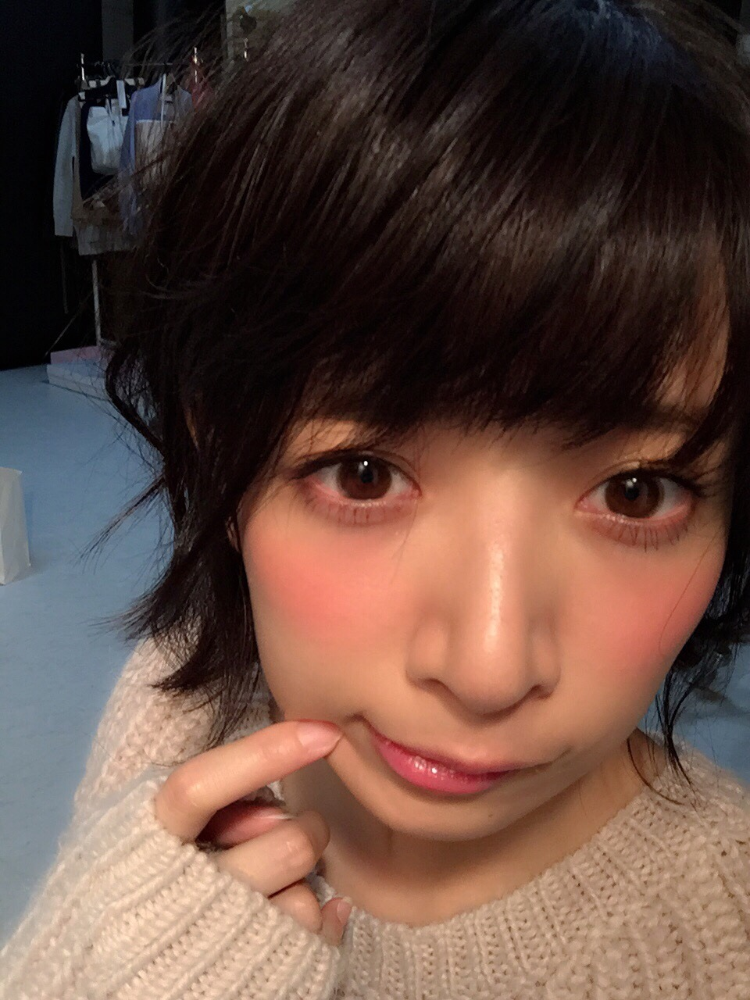
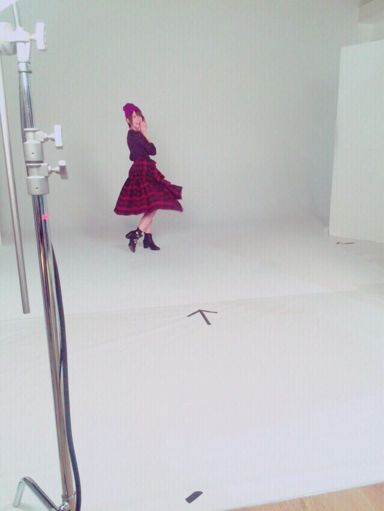
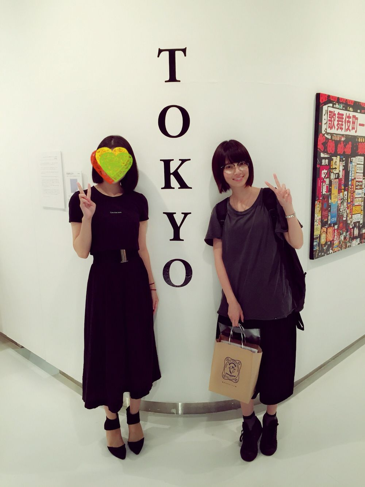

| 2015/09 20 Sun | 言わなきゃって思うことたく さんある |
わたしの1st写真集 やさしい棘
おかげさまでたくさんの人の手に渡っていっているようです！
みんなほんとにありがとう（；＿；）
みんなから感想聞くたび
あーわざわざ買ってくれたのかー
あーこんなにほめられるなんて
あーこんなに喜んでもらえるなんて
思いもしなかったなぁ、嬉しいなぁ、と、感じてます。
写真集出す前は あーわたしの写真集売れるのかなーどんな写真がみんなは見たいのかなー不安だなーと
根っからのネガティブなわたしは少し悩んでいたけど、みんなからの声を聞いて、ようやく自信を持てました。
出してよかったー！！頑張ってよかったー！！見てもらえてよかったーーー！！！
みんなありがとー！！！！！！
見てないみんなは早く見てね。笑
すごく嬉しいことにさー、
わたしの友達って普段あんまりわたしの仕事の話とかしてこないのね。ほとんど乃木坂のこと知らないの。LIVEも来る？って聞いても来ないような人が多くて笑
そんな友達たちが、わざわざ書店を回って写真集を買ってくれて写メを撮って送ってくれたり笑、
CanCamのスタッフさんやカメラマンさんも
写真集を買ってくれて、
サインしてー！って持ってきてくれるの！
お世話になってる美容師さんたちやメイクさんにも珍しくサインを求められた。笑
喜んでくれるの。普段からよく顔合わせてるのに。笑
あーこんなに作ったものが届いて喜ばれるの初めてかもなーって思った！
乃木坂としてはたくさんあるけども！
1人だとダイレクトにそれを感じる！すごいななんか！
周りの人の愛をひしひしと感じる！
わたし普段から愛想良い方ではないからさー、
顔付きが感じ悪いというか、人見知り激しすぎて挨拶すら下手くそだからほんと人付き合い日々不安しか感じてないんだけど
そんなんでも支えてくれる人にはありがとうと心から伝えたいと思ってるしだいすきだとおもったよもちろんこれを読んでくれてるあなたも！！！！
普通こんな長文読まないよ！ありがとう！！！笑
そうなんですよね
最近は好きなことたくさんさせてもらってる、させてもらうんです、仕事でね！
なんと
安部礼司 ABE-GIG in 武道館
出演させて頂きます！！
まさか、まさか！！！！
この前ゲスト出演させてもらったときもど緊張してしまったのに、、、
今から緊張しかない、、、どうしよう、、、笑
乃木坂としては何度か立っている武道館に
乃木坂から離れて、1人で立ってきます、、、
しかも、お芝居で、、、( ﾟДﾟ )
刈谷さんの娘、のんちゃんの10年後
25歳ののんちゃん役です！
頑張る！精一杯がんばる！！！
是非！見に来てね！！！
ちなみに千葉雄大さんと共演だ！
SUMMER NUDE以来 ２年ぶりの！
清子さん春夫さん好きだった人も是非見に来てください！笑
そしてね、
OVERTURE！！
ヨウジヤマモトとコラボさせてもらいました(T ^ T)
なかなか出来るような仕事じゃない、、、嬉しい、、、
いつもお世話になってるニューエラさんも！！
嬉しいありがたい、是非見てね！ヾ(｡･ω･｡)
今日このあとはらじらー！におじゃましてきます！生出演！！
オリラジさんとひめたんの胸に飛び込んできまーすヾ(｡･ω･｡) 笑
聞いてねー(((o(*ﾟ▽ﾟ*)o)))
明日からはSOL！ガールズロックス第３週ですよー！！
今週も楽しいことになりそう！聞いてねっ(((o(*ﾟ▽ﾟ*)o)))
そして23日はCanCam発売日！
最近編集さんやメイクさんスタイリストさんに
ポージング上達したねって褒められるの（；＿；）
すごいだめだめだから勉強して練習してるんだけど、ようやく少し慣れてきたのかな、、、
引き続きがんばるよ！成長を見届けて！笑
かわいいページばっかりだ(((o(*ﾟ▽ﾟ*)o)))
これは私服だあ～もう肌寒いからこれに上着着てたよ～ヾ(｡･ω･｡) ダメージジーンズ！


メイクはこんな感じ、普段より大人っぽい？？
わたし、毎月３週目にいろんなこと集中してるね笑
よろしくう！
それでは、ラジオに向かいます！！ヾ(｡･ω･｡)

あ、こないだ友達の写真展行ってきた！

わたしすっぴんあしからず
友達の方が芸能人みたい笑
みんなそれぞれがんばってる！！！
友達が社会人になっていくの寂しい、仕方ないけど
今度こそ行ってきます！！！笑
コメント(1654)
2015/09/20 21:24